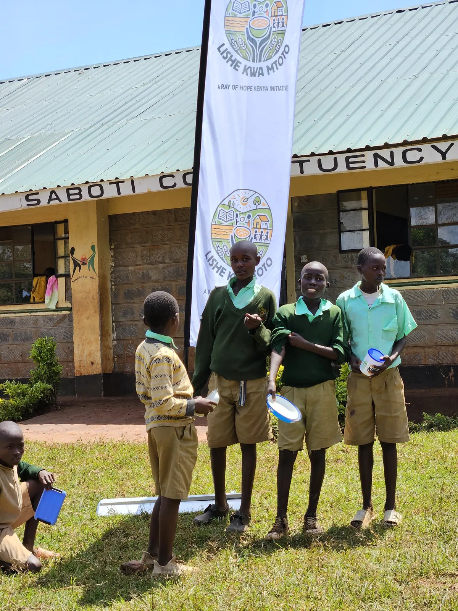

Born from a simple belief.
LisheKwaMtoto was born in 2024 from a simple yet powerful belief: no child should have to learn on an empty stomach.
What began as a single outreach activity to provide meals for children in underserved communities quickly revealed a much deeper challenge. During that first initiative, volunteers met countless children who arrived at school without having eaten breakfast, while many others relied on their school meal as the only nutritious food they would receive all day. Hunger was silently robbing them of their ability to concentrate, participate in class and fully realise their potential.
This experience became a defining moment. Rather than treating hunger as a temporary problem, LisheKwaMtoto committed itself to becoming part of the long-term solution. With the support of dedicated partners, generous donors, local leaders, schools and community volunteers, the initiative evolved into a structured school feeding programme focused on reaching children in Kenya's Arid and Semi-Arid Lands (ASALs), where food insecurity continues to affect thousands of families.
